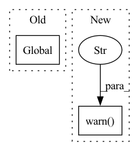

Pattern ID :14683
Before Change
def load_from_record_date(task_name, record_date):
global tester
assert isinstance(tester, Tester)
load_tester = tester.load_tester(record_date, task_name, tester.root)
// load checkpoint
load_tester.new_saver(var_prefix="", max_to_keep=1)After Change
:param record_date:
:return:
logger.warn("the function is deprecated. please check the ExperimentLoader as the new implementation" )
global tester
assert isinstance(tester, Tester)
load_tester = tester.load_tester(record_date, task_name, tester.root)
// load checkpointIn pattern: SUPERPATTERN
Frequency: 4
Non-data size: 2
Instances Fragment ID: 48282096
Project Name: xionghuichen/rlassistant
Commit Name: b6dcdaf3fd292cf748507fc840c99a112d396709
Time: 2021-04-08
Author: chenxionghui_i@didiglobal.com
File Name: RLA/easy_log/tester.py
M Class Name: AnonimousClass
N Class Name: AnonimousClass
M Method Name: load_from_record_date(2)
N Method Name: load_from_record_date(2)
M Parent Class:
N Parent Class:
M File Name: RLA/easy_log/tester.py
N File Name: RLA/easy_log/tester.py
M Start Line: 25
M End Line: 25
N Start Line: 111
N End Line: 112
Before Change
return load_iter, load_res
def import_hyper_parameters(task_name, record_date):
global tester
assert isinstance(tester, Tester)
load_tester = tester.load_tester(record_date, task_name, tester.root)
args = argparse.Namespace(**load_tester.hyper_param)After Change
:param record_date:
:return:
logger.warn("the function is deprecated. please check the ExperimentLoader as the new implementation" )
global tester
assert isinstance(tester, Tester)
load_tester = tester.load_tester(record_date, task_name, tester.root)
Fragment ID: 48282097
Project Name: xionghuichen/rlassistant
Commit Name: b6dcdaf3fd292cf748507fc840c99a112d396709
Time: 2021-04-08
Author: chenxionghui_i@didiglobal.com
File Name: RLA/easy_log/tester.py
M Class Name: AnonimousClass
N Class Name: AnonimousClass
M Method Name: import_hyper_parameters(2)
N Method Name: import_hyper_parameters(2)
M Parent Class:
N Parent Class:
M File Name: RLA/easy_log/tester.py
N File Name: RLA/easy_log/tester.py
M Start Line: 36
M End Line: 36
N Start Line: 95
N End Line: 96
Before Change
return args
def fork_tester_log_files(task_name, record_date):
global tester
assert isinstance(tester, Tester)
load_tester = tester.load_tester(record_date, task_name, tester.root)
// copy log file
tester.log_file_copy(load_tester)After Change
:param record_date:
:return:
logger.warn("the function is deprecated. please check the ExperimentLoader as the new implementation" )
global tester
assert isinstance(tester, Tester)
load_tester = tester.load_tester(record_date, task_name, tester.root)
// copy log file Fragment ID: 48282094
Project Name: xionghuichen/rlassistant
Commit Name: b6dcdaf3fd292cf748507fc840c99a112d396709
Time: 2021-04-08
Author: chenxionghui_i@didiglobal.com
File Name: RLA/easy_log/tester.py
M Class Name: AnonimousClass
N Class Name: AnonimousClass
M Method Name: fork_tester_log_files(2)
N Method Name: fork_tester_log_files(2)
M Parent Class:
N Parent Class:
M File Name: RLA/easy_log/tester.py
N File Name: RLA/easy_log/tester.py
M Start Line: 44
M End Line: 44
N Start Line: 130
N End Line: 131
Before Change
dataset = dataset_class(records_sorted_by_id)
global _WARNED_ABOUT_AS_PANDAS
if not _WARNED_ABOUT_AS_PANDAS:
_LOGGER.warning(
"The argument "as_pandas" in `rb.load` will be deprecated in the future, and we will always return a `Dataset`. "
"To emulate the future behavior set `as_pandas=False`. To get a pandas DataFrame, call `Dataset.to_pandas()`"After Change
>>> dataset = rb.load(name="example-dataset")
if as_pandas is False:
warnings.warn(
"The argument `as_pandas` is deprecated and will be removed in a future version. "
"Please adapt your code accordingly. " ,
FutureWarning,
)
elif as_pandas is True:
raise ValueError(
"The argument `as_pandas` is deprecated and will be removed in a future version. "
"Please adapt your code accordingly. ", Fragment ID: 48282095
Project Name: recognai/rubrix
Commit Name: 5f3b2a00f36f4dedd4aaf636900798fd14698978
Time: 2022-06-07
Author: francisco@recogn.ai
File Name: src/rubrix/client/api.py
M Class Name: Api
N Class Name: Api
M Method Name: load(6)
N Method Name: load(6)
M Parent Class:
N Parent Class:
M File Name: src/rubrix/client/api.py
N File Name: src/rubrix/client/api.py
M Start Line: 399
M End Line: 473
N Start Line: 398
N End Line: 472